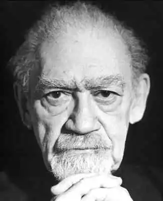

День народження: 09.05.1920 року
Місце народження: Лондон, Великобританія
Дата смерті: 07.02.2010 року Оригінальне ім'я: Філіп Клас Original name: Philip Klass Філіп Клас, більш відомий під псевдонімом ‘Вільям Тенн' – американський фантаст британського походження, відомий поруч сатиричних творів. Народився Клас в Лондоні; в Нью-Йорк він перебрався разом зі своїми батьками ще до свого другого дня народження. Виріс він у Брукліні, і був старшим з трьох дітей. Під час Другої Світової Війни Класу довелося стати військовим інженером в Європі, у складі інженерних військ США. Саме там Клас працював технічним редактором над військовим радаром і в радіолабораторії, а згодом влаштувався в ‘Bell Labs'. Вперше Клас почав писати ще в 1945-м. Спочатку з-під його пера виходили академічні статті та есе, потім – повісті й оповідання. В цей час він уже працював у ‘Bell Labs'; ймовірно, саме досвід роботи над радарами підкинув йому тему для першого його творіння, оповідання ‘Олександр-наживка' (‘Alexander the Bait'); у ньому один з головних героїв досліджував будову Місяця з допомогою надпотужного радара. Розповідь був опублікований в травні 1946-го; незабаром після цього радар ‘Signal Corps' і справді зміг дістати променем до Місяця, зробивши казку бувальщиною. Друга історія, ‘гра' (‘child's Play'), часто передруковується і донині. У ній розповідалося про те, як адвокат створює людей за допомогою спеціального конструктора, призначеного для дітей з майбутнього. Незабаром після публікації цієї розповіді в ‘Astounding Science Fiction" про Тенне заговорили, як про вкрай багатообіцяючому молодого фантаста-гумористові. Протягом п'ятдесятих читачі ‘Galaxy Science Fiction' c нетерпінням чекали у кожному новому номері нових творів Тенна. Автор не розчарував їх – саме тоді їм були написані найбільш відомі і по сей день його твори – ‘Венера і сім підлог' (‘Venus and the Seven Sexes'), ‘Аж до останнього мерця' (‘Down Among the Dead Men'), ‘Звільнення Земчи', ‘Термін авансом' (‘Time in Advance') і ‘Таки у нас на Венері є раббі!' (‘On Venus, We Have Got a Rabbi'). Одна з його нехудожніх статей, ‘Mr. Eavesdropper', пізніше увійшла до збірки "Кращі статті журналу' 1968-го. У 1957-му Філ Клас одружився на Фруме Клас; в середині шістдесятих вони перебралися в Стейт-Коледж, Пенсильванія. У Пенсільванії Філіп викладав англійську та порівняльну літературу в Державному Університеті штату; займався викладацькою діяльністю фантаст протягом двадцяти чотирьох років. Багато його учні в подальшому самі стали професійними письменниками, зокрема, автор історій про Рембо Девід Моррелл, сценарист Стівен де Суза і автор детективів Рей Ринг. Після відходу на пенсію Клас з дружиною перебрався в передмісті Піттсбурга, неподалік від гори Лебанон. Сталося це в 1988-му;в цьому ж році в світ вийшов перший розповідь Фрумы Клас, ‘До Веселки' (‘Before the Rainbow'). У 2004-му Тенн став почесним гостем на Світовому Конвент Наукової Фантастики ‘Noreascon 4' і одним із запрошених авторів на ‘Loscon 33' у Лос-Анджелесі. Більшість науково-фантастичних творів Клас опублікував під псевдонімом ‘Вільям Тенн'; більшість не-художніх творів він випустив під своїм справжнім ім'ям. Дуже часто письменника плутали з відомим викривачем історій про НЛО Філіпом Джей Класом; крім схожих імен, ці двоє народилися з розривом всього в шість місяців. Втім, Філіп Джей Клас помер 9-го серпня 2005-го. Вільям Тенн помер 7-го лютого 2010-го від застійної серцевої недостатності. Енциклопедія Наукової Фантастики називає Тенна одним з найгеніальніших коміків в історії фантастики.